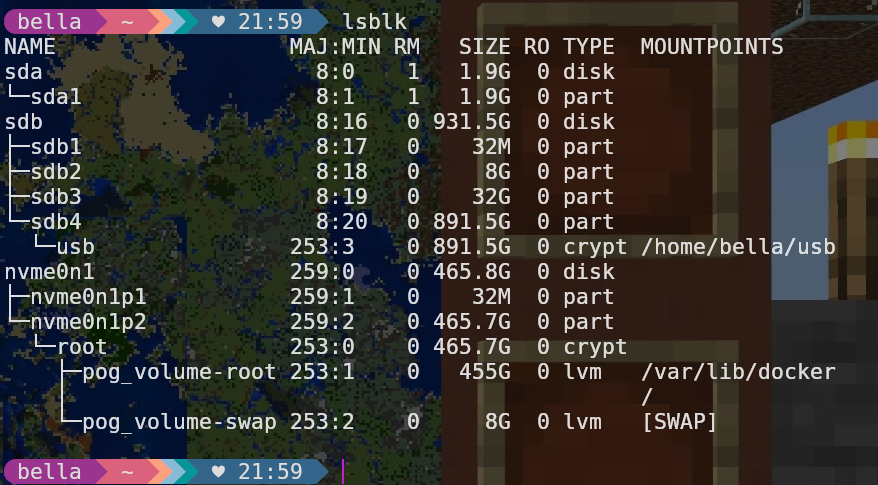

Hopefully just works with the cable plugged in :p
First we will have to setup a network connection
There are 2 main ways of accessing the internet;
Hopefully just works with the cable plugged in :p
If you don't have a graphical way to connect to WIFI you can try the following
First you need to know the disk you want to install on
I would recommend running the lsblk command to display all disks
Then picking the disk you want to install on
My main disk is a 465.8G NVMe drive and I have a few other drives plugged in
